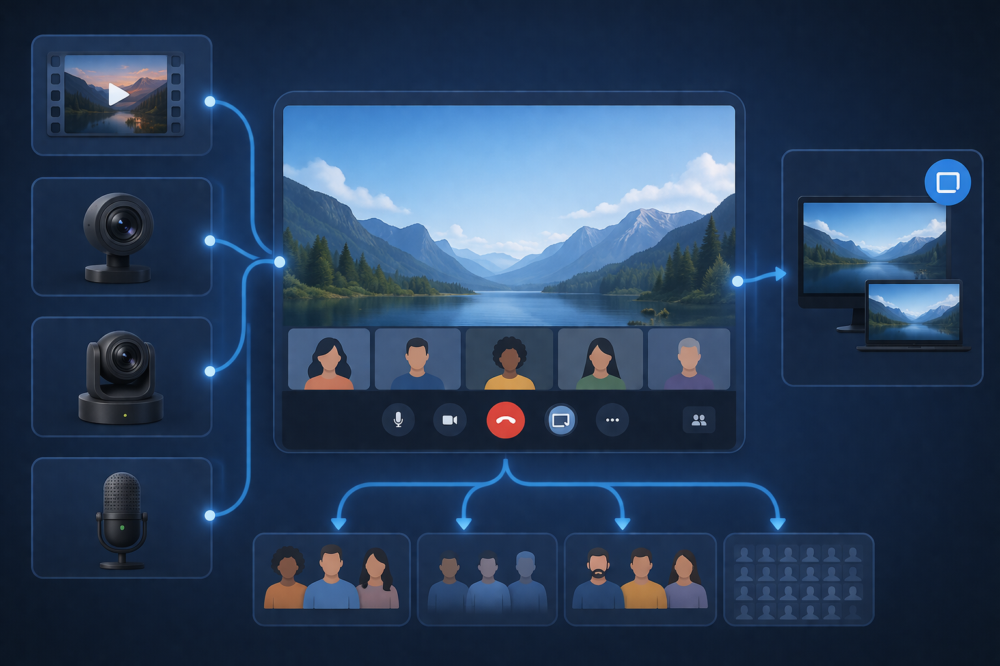
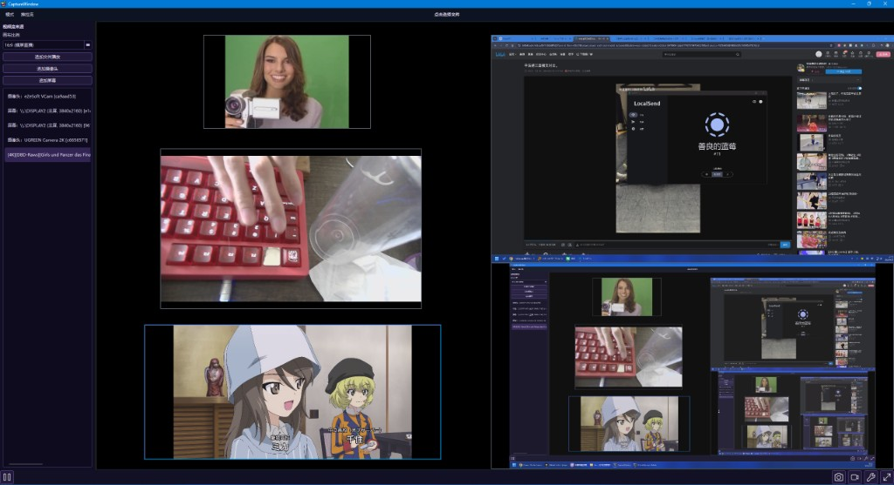
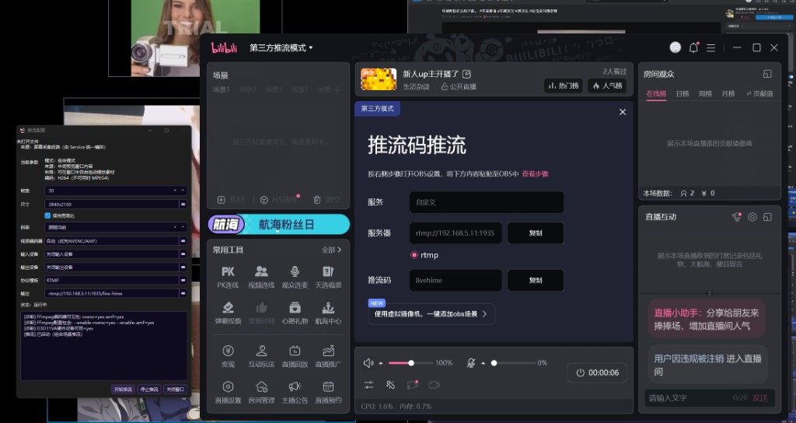

FPlayer
跨平台局域网多输入源流媒体系统。
采集、编码、推流、拉流，如丝般顺滑。
跨平台局域网多输入源流媒体系统。
采集、编码、推流、拉流，如丝般顺滑。
点击卡片，探索 FPlayer 在专业领域的深度表现。
针对车间局域网优化，实现跨机器摄像头演示。支持主流工业摄像机协议，为生产线提供高稳定性、低延迟的监控底座。
适用于手术室示教系统。支持超声、内镜等影像的实时采集与广播。支持本地录制与大模型标注，为医疗科研提供精准数据支撑。
在局域网内无限制分发实验演示视频。教师端采集屏幕或摄像头，一键推流至全班终端。流畅度高达 120fps，满足精细实验展示。
顺应国产化浪潮，全面支持国产操作系统。基于 C++17 分层设计，后端插件化。无论底层平台如何变化，都能提供统一的高质量体验。
支持本地视频、摄像头、麦克风及屏幕共享。
视野所及，皆可分发。

基于 C++17 构建。内置高性能编解码器，支持软解/硬解动态切换。极致优化 CPU 占用。
覆盖采集端、推流端与播放端的完整链路，展示 FPlayer 在复杂局域网环境中的稳定性与实时性表现。


只有 Runtime 认识所有 Backend，实现工厂职责的完美闭环。API 抽象层统一接口，让维护与扩展变得前所未有的简单。
// 架构说明书
app → widget → service
↓
runtime (Factory / Assembly)
↓
backend (Qt / FFmpeg / WebRTC)
↓
API (Interfaces)
↓
Common Utilities / Tools